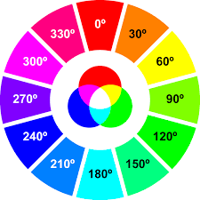

The RGB color scheme is convient because it's very close to how computers represent color internally. There's another another equally powerful system in CSS called the Hue-Saturation-Lightness color scheme, abbreviated as HSL.
The syntax for HSL is similar to the decimal form of RGB, though it differs important ways. The first number represets the degree of hue, and can be between 0 to 360. The second and third numbers are percentages, representing saturation, and lightness respectively.
Hue is the first number. It refers to an angle on a color wheel. Red is 0 degrees, Green is at 120 degrees, Blue is 240 degrees, and then back to Red at 360 degrees. Review the color wheel below for more color degrees.
Saturation refers to the intensity or purity of a color. The saturation is a percentage based, and as you increase to 100%, color become richer. As saturation decreases to 0%, colors come grayer.
Lightness refers to the intensity or purity of the color. Halfway, or 50% is normal lightness. Imagine a sliding dimmer on a lightswitch that starts half way. Slidig the dimmer up towards 100% makes the color lighter, closer to white. Sliding the dimmer down towards 0% makes the color darker, closer to black